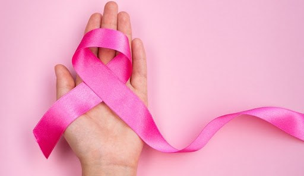
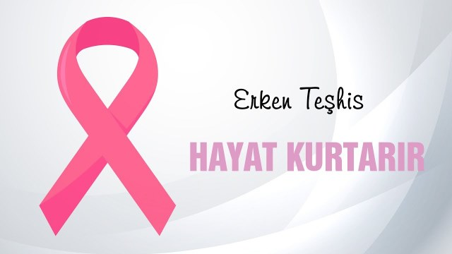
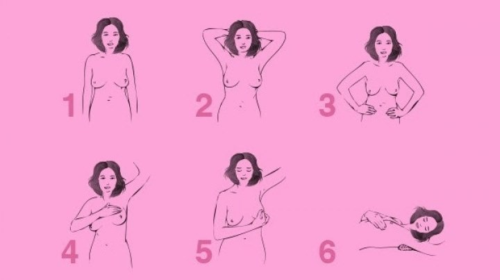

Ekim Ayı Meme Kanseri Bilinçlendirme ve Farkındalık Ayı
FARKINDAYIM,BİLİYORUM...
Dünya sağlık örgütü tarafından 2004 yılından bu yana meme kanserinde erken teşhisin önemi ve meme kanseri farkındalığı oluşturmak için tüm dünyada Ekim Ayı Meme Kanseri Bilinçlendirme ve Farkındalık Ayı olarak belirlenmiştir.
Bir süredir hayatımızın merkezinde Covid-19 hastalığı var. Kendimizi ve çevremizi bu hastalığa karşı korumaya çalışıyoruz. Ancak sağlıklı bir hayat için kendimizi korumamız gereken Covid-19 kadar önemli başka hastalıklar da var.
Aşı olmak özellikle bulaşıcı hastalıklardan korunmak için ne kadar önemli ise bazı hastalıklarda da tarama testleri erken tanı ve tedavide bir o kadar önemlidir.
Bu hastalıklardan birisi de Meme kanseridir.
Meme kanseri, tüm dünyada olduğu gibi ülkemizde de kadınlarda en sık görülen ve en çok ölümlerin görüldüğü kanser türüdür. Erken teşhis edilirse tedavi edilebilen bir hastalıktır. Erken evrede hiç belirti göstermediği için meme kanserinin erken tanısı için kendi kendine meme muayenesi yapmaları büyük önem taşımaktadır. 20 yaşın üzerindeki tüm kadınların kendi kendilerine meme muayenesi konusunda yeterli eğitimi almaları düzenli ve belirli aralıklarla yapmaları oldukça önemlidir.
Diğer tüm kanserlerden ve meme kanserinden korunmak için sağlıklı bir yaşam tarzını benimsemek, sağlıklı beslenmek, düzenli fiziksel aktivitede bulunmak, ideal kiloda olmak ve ideal kiloyu korumak, sigara ve alkolden uzak durmak gerekir.
İkincil korunmada ise kendi kendine meme muayenesi yapmak, klinik meme muayenesi yaptırmak ve tarama amaçlı mamografi çektirmek gelmektedir.
20-39 yaş arası kadınlar için her ay düzenli kendi kendine meme muayenesi yapması, 2 yılda bir klinik meme muayenesi yaptırması önerilmektedir.
40-69 yaş arası kadınlar için her ay düzenli kendi kendine meme muayenesi yapması ve yılda bir kez klinik meme muayenesi için doktora gitmesi ayrıca iki yılda bir mamografi çektirmesi önerilmektedir.
Ülkemizde her ilde bulunan Kanser Erken Teşhis, Tarama ve Eğitim Merkezlerinde (KETEM) ücretsiz olarak mamografi çekilmekte; ayrıca kendi kendine meme muayenesi eğitimleri ve broşürleri de ücretsiz olarak verilmektedir.
KETEM' den randevu alarak taramalarınızı yaptırabilirsiniz.
NİLÜFER KETEM: 0 224 441 74 79
OSMANGAZİ KETEM: 0 224 225 33 99
YILDIRIM KETEM: 0 224 366 55 99
UNUTMAYIN ERKEN TEŞHİS HAYAT KURTARIR...
Meme Kanseri
Meme kanseri meme dokusunda hücrelerin kontrolsüz çoğalması sonucunda oluşur. Sadece kadınlarda değil erkeklerde de görülebilir.
Meme kanseri risk faktörleri şunlardır:
Değiştirilebilir olanlar; Obez veya fazla kilolu olmak, yeterli fiziksel aktivite yapmamak, hiç doğum yapmamış olmak veya ilk doğumunu 30 yaşın üzerinde yapmış olmak, doğum kontrol hapı veya iğnesi kullanmak, menopoz sonrası hormon tedavisi almak, alkol kullanmak.
Değiştirilemez olanlar; Kadın olmak, yaşlanmak, belirli genlere sahip olmak(BRCA 1,BRCA 2 gibi), aile öyküsü, bir memede kanser öyküsü, memede bazı iyi huylu oluşumlar, erken adet ve geç menopoz öyküsü, göğüs bölgesine radyoterapi almak, meme dokusunun yoğun olması.
Meme kanserinin en sık belirtileri memede ağrısız, zamanla büyüyen kitlenin hissedilmesi ele gelmesidir.
Diğer belirtiler ise memede ağrı, meme başında çekilmeler, memede kaşıntı ve yanma, portakal kabuğu görünümü, deride değişiklikler, meme başında akıntı (özellikle kanlı akıntı), memede şişlik ve şekil değişikliği olabilir.
Tedavisinde her hastanın tedavisi farklılık göstermekte olup kitlenin yeri, evresi, hastanın yaşı, başka sağlık problemlerinin olması belirlemektedir. Cerrahi, kemoterapi, radyoterapi gibi farklı tedavi yöntemleri uygulanmaktadır.
Meme kanserinden korunmanın mümkün olduğunu unutmayalım, muayene olmaktan utanmayalım, ertelemeyelim, kendimize zaman ayıralım...
Kendi Kendine Meme Muayenesi
Kendi kendine meme muayenesi kolaydır, herkes uygulayabilir, herhangi bir maliyeti yoktur, herhangi bir malzeme gerektirmez.
Her meme için 5 dakika ayırmanız yani kendinize ayda bir toplam 10 dakikaayırmanız yeterli.
Kendi kendine meme muayenesi iki aşamadan oluşur: İlk aşamada gözle değerlendirme yapmak gerekiyor. İkinci aşamada ise elle muayene yapmak geliyor.
Gözle değerlendirmede belden üst kısım çıplak olacak şekilde ayna karşısına geçilir. Önce kollar sarkık sonra kollar baş üstüne kaldırılarak, daha sonra eller belde ve öne doğru eğilerek vücuda pozisyon verilir ve her iki meme için gözlem yapılır.
Gözle değerlendirmede memelerin büyüklüğüne, simetrisine, derinin rengine, şekline, meme başlarına, koltuk altı meme çevresine bakılır.
Elle muayenede ise elin üç parmağının iç yüzü kullanılarak tarama yapılır. Elle meme muayenesi ayakta ve yatarak yapılır. Ayakta elle sol meme muayenesinde sol kol baş üzerine kaldırılarak sağ el 3 parmakla muayene yapılır. Sağ meme muayenesinde ise sağ kol baş üzerine kaldırılarak sol el üç parmak iç yüzüyle muayene yapılır.
Yatarak elle meme muayenesinde sırt üstü yatılır ve muayene edeceğiniz taraftaki omuz altına yastık yerleştirerek ve aynı taraftaki kolunuzu başın üstüne yerleştirerek pozisyon alınır. Dairesel hareketler yaparak ve uyguladığınız baskıyı artırarak muayene edilir. Koltukaltı ve meme başı (sıkarak akıntı olup olmadığına bakılır) muayene edilerek muayene tamamlanır.
MEME KANSERİ KADERİNİZ OLMASIN………
